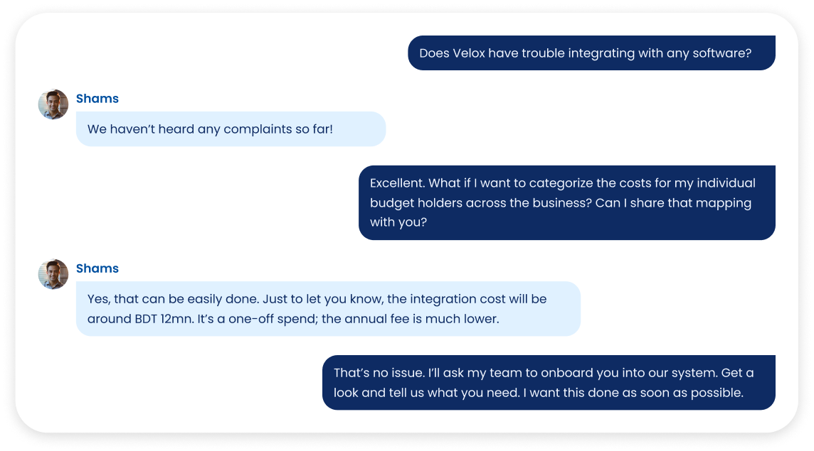

<div class=" mx-auto">
  <!-- Header -->
  <div onclick="loadPage('./page-1.html')" class="py-[50px] px-[150px] cursor-pointer">
    
  </div>
  <div class=" relative  xl-zoom:bottom-[5rem] bottom-[3.5rem] 
     o h-[58vh] w-[55vw] 
     z-50 overflow-hidden ">
    
  </div>
  <div class="px-[150px] absolute bottom-0 left-0 w-1/2 h-[30vh] flex justify-center flex-col  mb-[18px]">
   <div class="">
    <div class="flex items-center gap-2 mb-[1.15rem]">
      
      <p class="text-[#004F9F] xl-zoom:text-[24px] lg-zoom:text-[18px]">
        Select the arrow button to continue
      </p>
    </div>
   </div>
    <div class="flex gap-5">
      <button onclick="loadPage('./page-5.html')"
        class="hover:scale-105 transition duration-200 xl-zoom:w-[100px] xl-zoom:h-[60px] lg-zoom:w-[75px] lg-zoom:h-[45px]">
        
      </button>
      <button onclick="loadPage('./page-7.html')"
        class="hover:scale-105 transition duration-200 xl-zoom:w-[100px] xl-zoom:h-[60px] lg-zoom:w-[75px] lg-zoom:h-[45px]">
        
      </button>
    </div>
  </div>
  <div class="bg-[#E72582] absolute top-0 left-0 w-1/2 h-[70vh]"></div>
</div>
</div>
<div class="w-1/2 right-0 ml-auto h-screen overflow-hidden absolute top-0 left-0">
  
</div>
